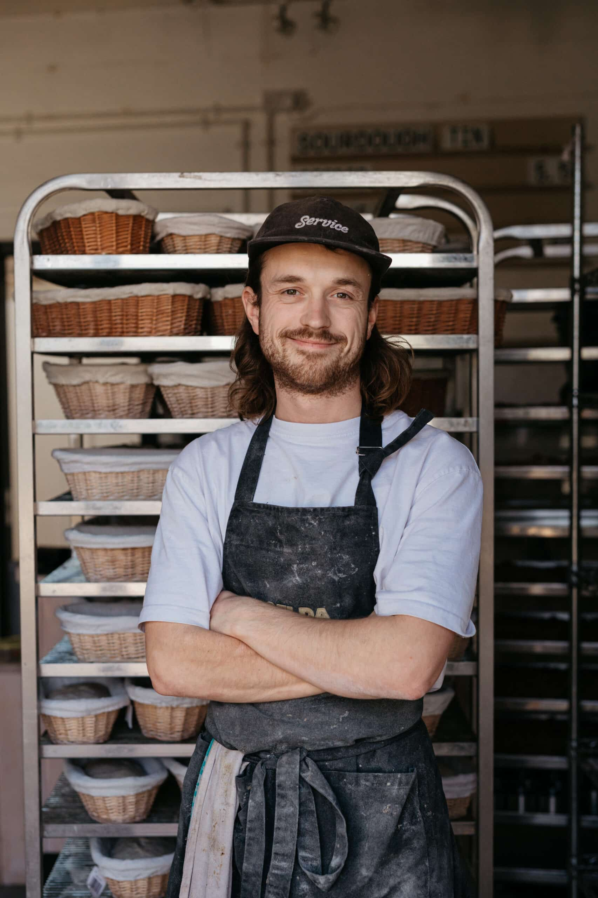
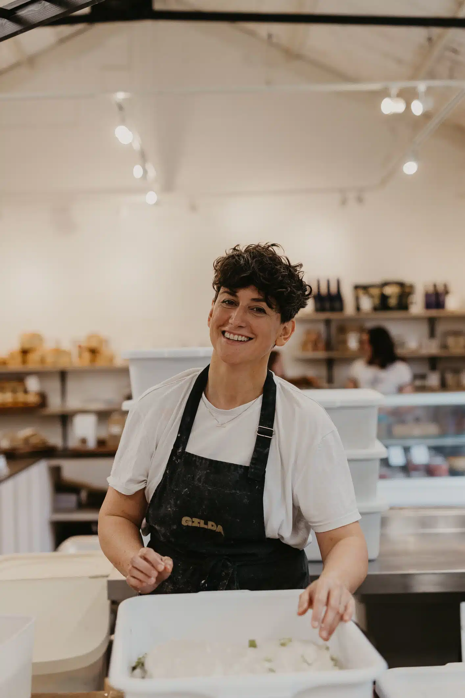
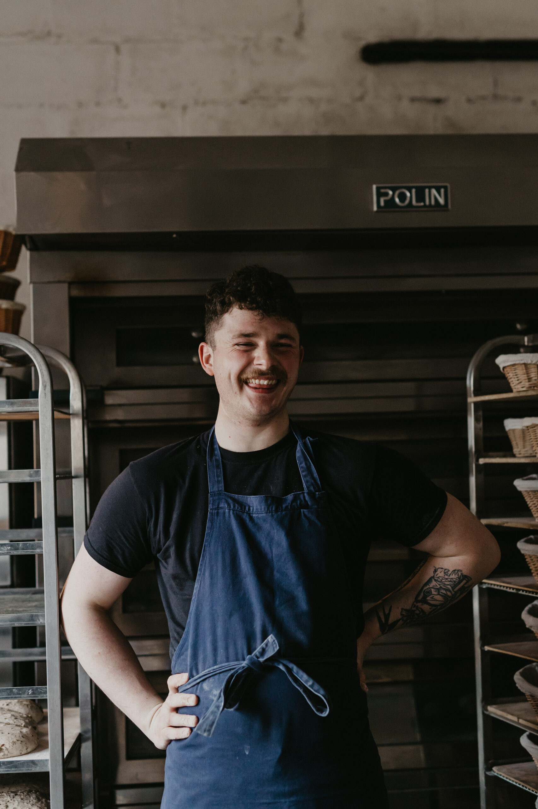
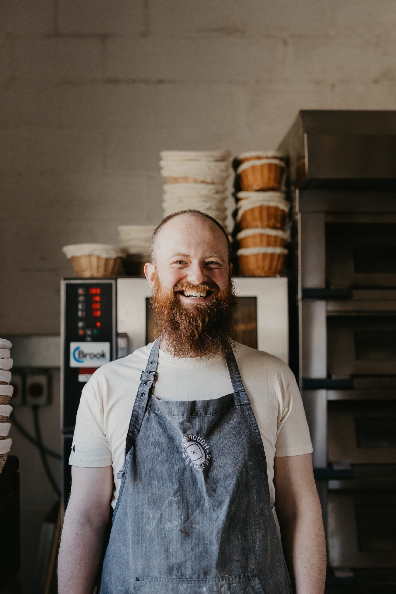
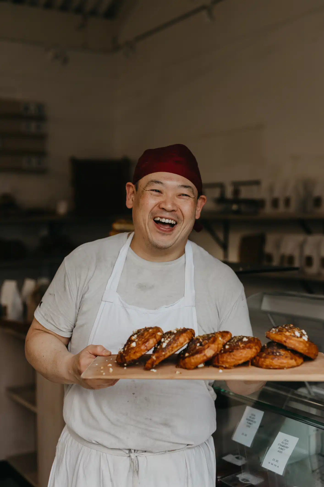
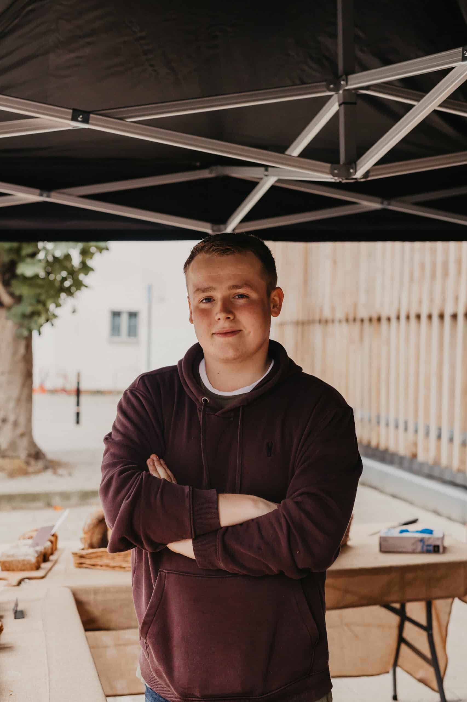

About Us
Our Company has started its operation since 2023 as flour Production Company. With its 4000 m2 facility it is one of the best in region. Firstly, we have started producing varieties of flour products for Kosovo's market and exporting to neighbor countries. The factory is equipped with a modern lab which helps maintain the quality of our products.
What do we do?
We cook traditional and modern cakes, as well as cookies, and different puddings. We offer sweet and non-sweet food items, and we also accept new ideas from our customers.We offer a variety of hot beverages including Downeast Coffee, Tea, Espresso and Cappuccino as well as a variety of Cold Beverages including ice coffee.
Breakfast and Lunch Sandwiches are served all day long. (all lunch sandwiches are served on Homemade Sunnyfield Brickoven Bakery Bread)
We have a variety of pastry and desserts on hand every day.
We specialize in custom cakes! If you’re looking for a cake, contact us to order ahead. Most cake orders should be placed at least 2 weeks in advance. Please NEVER hesitate to call with a last minute cake request, we just may be able to squeeze you in!

Will has worked at a number of well regarded restaurants across Kent including,
The Dog at Wingham, Pork & Co and The Corner House.
It was when he joined Cafe Du Soliel as the pizza chef, that he discovered a love for dough. In the years since, particularly during lockdown, he began perfecting his bread-making techniques.

Allison is the Retail Operations Manager at Duchess Bake Shop and is the glue that binds us all together. She joined the Duchess team in 2017 as a front of house server at our 124th Street location. Allison is dedicated to every one of her team members and works with our front of house teams to keep our cafes running smoothly.

Lex learned the craft in his father's bakery in homeland Korea. Later on, he trained and worked at international bakery in Korea gaining experience in bread making, cake decorating, and pastry production.

Jon started his career in finance in London working
as an asset manager. However, in his mid 20s,
his passion for adventure took him to live and
work in San Sebastian

Josh is the newest member of the team, joining in October 23. During lockdown, Josh discovered his passion for making sourdough at home, which he’d always wanted to take more seriously. In 2022, he stopped his work in the media advertising industry to start a baker role at Docker in Folkestone

Ben has always had a passion for sourdough, which started in his home kitchen. He decided to follow that love for bread and began work at Wild Bread, where he gained most of his sourdough-making experience, before moving briefly to Grain and Hearth and then onto the Gilda team in February 2023.
❮
❯